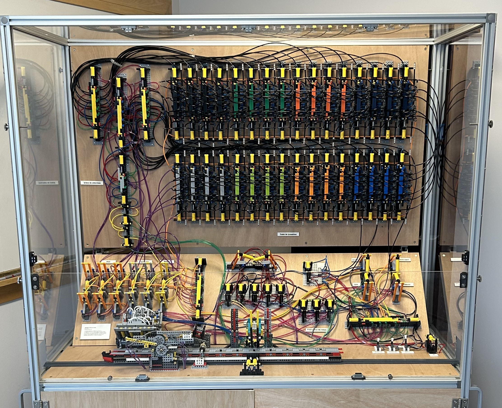
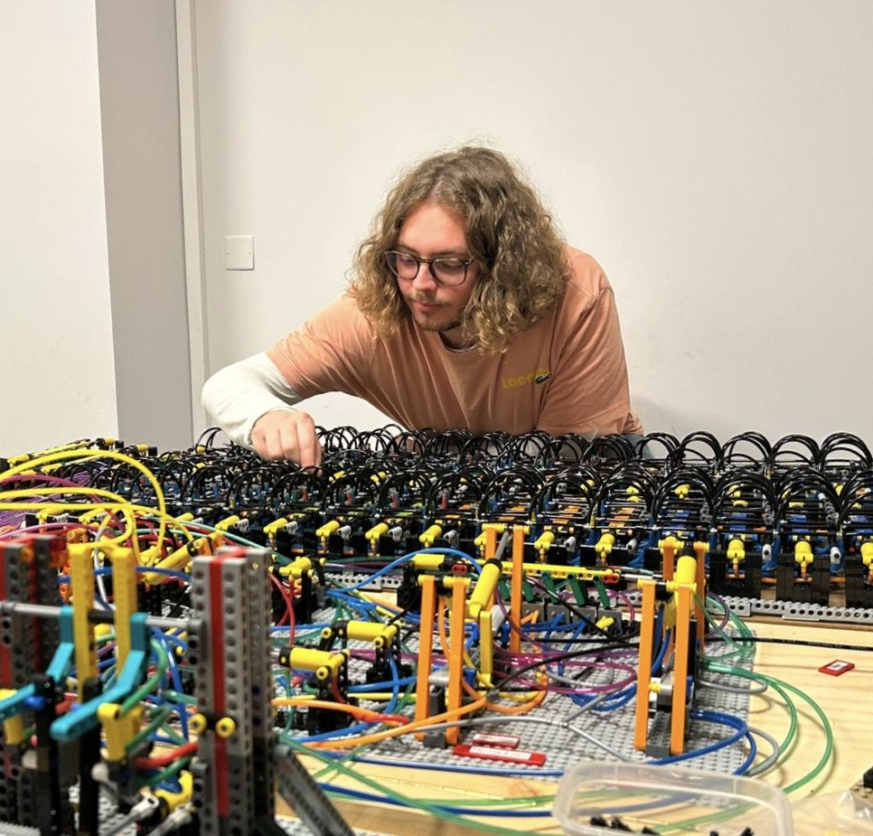

Alan 8.4 : une machine de Turing en Lego
7 états (+ 1 état d'arrêt), 4 symboles, 9042 briques Lego.

Science EtonnanteJe suis doctorant en mathématiques dans l'Unité de Mathématiques Pures et Appliquées (UMPA) à l'ENS de Lyon. Ma thèse s'articule autour de deux axes : le premier concerne l'étude des variétés mixtes et des singularités mixtes et le deuxième concerne la médiation et la didactique des mathématiques.
En particulier, mon travail dans la médiation tourne autour d'Alan 8.4, la machine de Turing en Lego que nous avons construite à l'UMPA et que nous exploitons pour la médiation.

7 états (+ 1 état d'arrêt), 4 symboles, 9042 briques Lego.

Science Etonnante